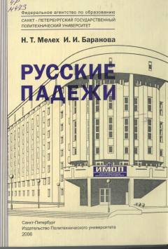

РПRus tili kelishiklarini o'rganish va mashq qilish uchun o'quv qo'llanma.
Ushbu o'quv qo'llanma chet ellik talabalar uchun rus tilining predlog-kelishik tizimini o'rganish va mustahkamlashga mo'ljallangan. Kitobda turli mashqlar va tushuntirishlar keltirilgan bo'lib, u texnika OTMlariga tayyorgarlik ko'rayotgan abituriyentlar uchun mo'ljallangan.